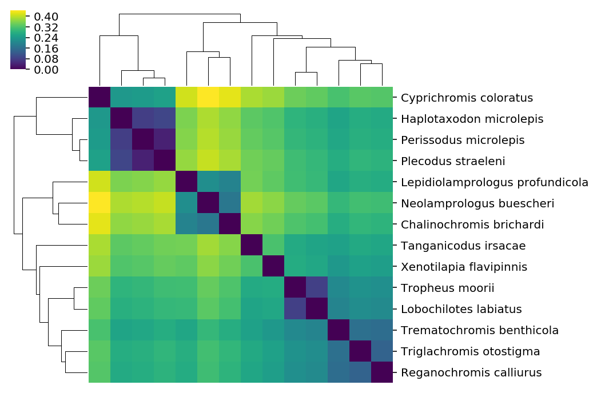
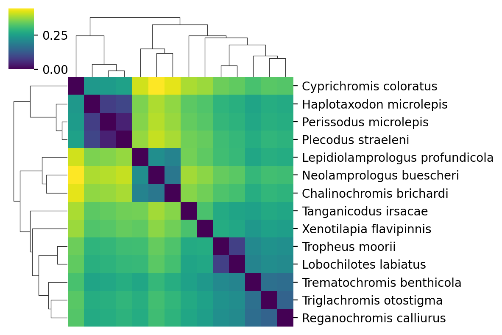
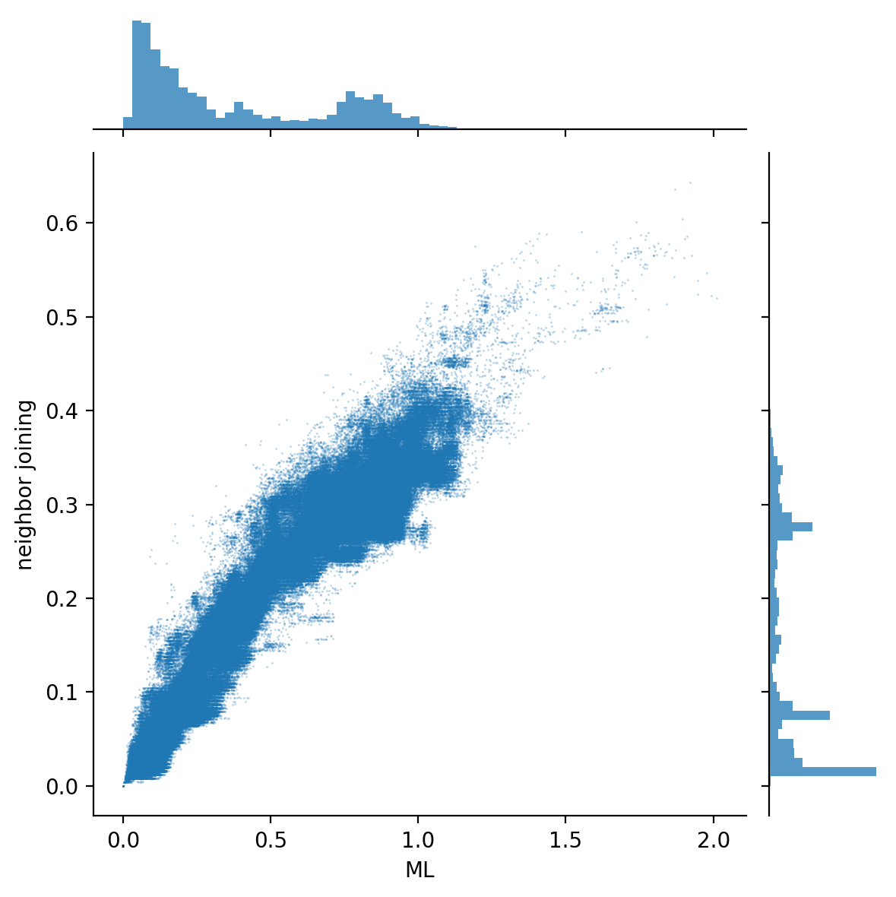

SuchTree
and python packages :
SuchTreepandascythonscipynumpymatplotlibseabornfastclusterdendropy
and obviously you'll want jupyter installed so you can run the notebook server. The
Internet is full of opinions about how to set up your python environment. You
should find one that works for you, but this guide is as good as any to get you started.
I'm going to start off by loading the required packages and suppressing some warnings
that should be fixed in the next
stable release of seaborn.
I'm going to assume that you are running this notebook out of a local copy of the SuchTree repository for any local file paths.
%config InlineBackend.figure_format='retina'
from SuchTree import SuchTree, SuchLinkedTrees
from numpy import zeros, array
import seaborn
import pandas
import toytree
import random
import warnings
from scipy.cluster.hierarchy import ClusterWarning
warnings.simplefilter( 'ignore', UserWarning )
warnings.simplefilter( 'ignore', FutureWarning )
Let's have a look at some example data. Here is a tree of cichlid fishes from my dissertation :
tree = toytree.tree( '../../data/bigtrees/host.tree' )
canvas, axes, mark = tree.draw( tree_style='d', tip_labels_align=True )
Loading tree data into SuchTree is pretty simple -- just give it a path
to a valid Newick file.
T = SuchTree( '../../data/bigtrees/host.tree' )
The SuchTree object has a dictionary called leaves that maps leaf names onto their
node ids. We'll make extensive use of this as we put the utility through its paces.
T.leaves
{'Tropheus_moorii': 0,
'Lobochilotes_labiatus': 2,
'Tanganicodus_irsacae': 4,
'Cyprichromis_coloratus': 6,
'Haplotaxodon_microlepis': 8,
'Perissodus_microlepis': 10,
'Plecodus_straeleni': 12,
'Xenotilapia_flavipinnis': 14,
'Triglachromis_otostigma': 16,
'Reganochromis_calliurus': 18,
'Trematochromis_benthicola': 20,
'Lepidiolamprologus_profundicola': 22,
'Neolamprologus_buescheri': 24,
'Chalinochromis_brichardi': 26}
Calculating distances
SuchTree has two ways to calculate distances; one pair a time, or
in batches. Batches are more efficient because it does each calculation without
the interpreter's overhead.
Here's how to measure distances one at a time :
a = random.choice( list( T.leafs.values() ) )
b = random.choice( list( T.leafs.values() ) )
d = T.distance( a, b )
print( 'taxon 1 : %d' % a )
print( 'taxon 2 : %d' % b )
print( 'distance : %f' % d )
taxon 1 : 10
taxon 2 : 14
distance : 0.329240
The distance() function will accept either node ids (which are integers),
or taxon names (which are strings).
a = random.choice( list( T.leafs.keys() ) )
b = random.choice( list( T.leafs.keys() ) )
d = T.distance( a, b )
print( 'taxon 1 : %s' % a )
print( 'taxon 2 : %s' % b )
print( 'distance : %f' % d )
taxon 1 : Neolamprologus_buescheri
taxon 2 : Xenotilapia_flavipinnis
distance : 0.368439
You can loop over all of the distances one at a time to construct a distance matrix...
D1 = zeros( ( len(T.leaves),len(T.leaves) ) )
for i,a in enumerate( T.leafs.values() ) :
for j,b in enumerate( T.leafs.values() ) :
D1[i,j] = T.distance( a, b )
Let's look at the distance matrix using a nice seaborn clustermap plot.
It's worth noting that seaborn is using scipy's cluster.hierarchy functions to build
those dendrograms from the distance matrix. They aren't going to have exactly the same
topology as the input tree, which was build with RAxML.
df = pandas.DataFrame( D1, index=[ i.replace('_',' ') for i in T.leaves.keys() ] )
seaborn.clustermap( df, xticklabels=False, cmap='viridis', figsize=(6,4) )
<seaborn.matrix.ClusterGrid at 0x77713876fb30>

To calculate the distances in a batch, we can use the distances() function,
which takes an $n \times 2$ array of node ids (make sure your array is representing
them as integers).
D2_list = []
for i,a in enumerate(T.leaves.values()) :
for j,b in enumerate( T.leaves.values() ) :
D2_list.append( ( a, b ) )
D2_array = array( D2_list )
print( D2_array.shape )
print( D2_array[:5] )
(196, 2)
[[0 0]
[0 2]
[0 4]
[0 6]
[0 8]]
D2 = T.distances( D2_array )
D2 = D2.reshape( ( len(T.leafs), len(T.leafs) ) )
We should get the same distance matrix and clustermap as before.
df = pandas.DataFrame( D2, index=[ i.replace('_',' ') for i in T.leaves.keys() ] )
seaborn.clustermap( df, xticklabels=False, cmap='viridis', figsize=(6,4) )
<seaborn.matrix.ClusterGrid at 0x7771388435c0>

If you want to use taxon names instead, distances_by_name() accepts an $n \times 2$ list
of tuples of taxon names, and looks up the node ids for you.
Loading data from URLs
SuchTree can also import data from the internets. Here is the distance matrix for the penguins, from the Global Phylogeny of Birds (I've copied some of their data into a Gist post because their data repository forbids programatic queries).
T3 = SuchTree( 'https://data.vertlife.org/birdtree/PatchClade/Stage2/set10/Spheniscidae.tre' )
D3_list = []
for i,a in enumerate(T3.leafs.values()) :
for j,b in enumerate( T3.leafs.values() ) :
D3_list.append( ( a, b ) )
D3_array = array( D3_list )
D3 = T3.distances( D3_array )
D3 = D3.reshape( ( len(T3.leafs), len(T3.leafs) ) )
df = pandas.DataFrame( D3, index=[ i.replace('_',' ') for i in T3.leafs.keys() ] )
seaborn.clustermap( df, xticklabels=False, cmap='viridis', figsize=(6,6) )
---------------------------------------------------------------------------
FileNotFoundError Traceback (most recent call last)
Cell In[24], line 1
----> 1 T3 = SuchTree( 'https://data.vertlife.org/birdtree/PatchClade/Stage2/set10/Spheniscidae.tre' )
3 D3_list = []
4 for i,a in enumerate(T3.leafs.values()) :
File SuchTree/MuchTree.pyx:151, in SuchTree.MuchTree.SuchTree.__init__()
FileNotFoundError: [Errno 2] No such file or directory: 'https://data.vertlife.org/birdtree/PatchClade/Stage2/set10/Spheniscidae.tre'
Comparing the topologies of two large trees
So far, we haven't done anything you couldn't do with other phylogenetics packages.
SuchTree really shines when you have to do a lot of distance calculations on very
large trees.
Here, we use SuchTree to compare the topology of a two trees containing the taxa
but constructed with different methods (FastTree and
neighbor joining). One million random pairs are
sampled from each tree, and the distances compared.
T1 = SuchTree( 'https://git.io/flbcM' )
T2 = SuchTree( 'https://git.io/flbcH' )
print( 'nodes : %d, leafs : %d' % ( T1.length, len(T1.leafs) ) )
print( 'nodes : %d, leafs : %d' % ( T2.length, len(T2.leafs) ) )
nodes : 108653, leafs : 54327
nodes : 108653, leafs : 54327
N = 1000000
v = list( T1.leafs.keys() )
pairs = []
for i in range(N) :
pairs.append( ( random.choice( v ), random.choice( v ) ) )
%time D1, D2 = T1.distances_by_name( pairs ), T2.distances_by_name( pairs )
CPU times: user 15.6 s, sys: 43.2 ms, total: 15.6 s
Wall time: 15.6 s
The distances() function, which uses node ids rather than taxa names,
would be a little bit faster. However, because the trees have different topologies,
the taxa have different node ids in each tree. SuchTree's distances_by_name()
function untangles the leaf name to leaf node id mappings for you.
df = pandas.DataFrame( { 'ML' : D1, 'neighbor joining' : D2 } )
seaborn.jointplot( 'ML', 'neighbor joining', data=df, alpha=0.3, size=6 )
<seaborn.axisgrid.JointGrid at 0x7fa02a460668>

from scipy.stats import spearmanr, kendalltau, pearsonr
print( 'Spearman\'s rs : %0.3f' % spearmanr( D1, D2 )[0] )
print( 'Kendall\'s tau : %0.3f' % kendalltau( D1, D2 )[0] )
print( 'Pearson\'s r : %0.3f' % pearsonr( D1, D2 )[0] )
Spearman's rs : 0.961
Kendall's tau : 0.824
Pearson's r : 0.969
Running with multiple threads
Another advantage of SuchTree's support for performing batches of distance
calculations is that these calculations can run outside of Python's
global interpreter lock.
This makes it possible to parallelize with Threads.
Python's Thread has less overhead than the
multiprocessing package's
Process, and Thread objects can access the same memory.
SuchTree intentionally does not allow the user to alter trees once they are created,
and so distance calculations are always thread safe. This makes it possible to use only
one instance of a tree for all threads, which ought to give you the best chance of
keeping it within L3 cache.
First, let's create a Cython function that calls SuchTree outside of the GIL.
%load_ext Cython
%%cython
import cython
def correlation( double[:] x, double[:] y ) :
return _correlation( x, y )
@cython.boundscheck(False)
cdef double _correlation( double[:] x, double[:] y ) nogil :
cdef int n = x.shape[0]
cdef int i = 0
cdef double r = 0.0
cdef double xbar = 0.0
cdef double ybar = 0.0
cdef double sx = 0.0
cdef double sy = 0.0
for i in xrange(n) :
xbar += x[i]
ybar += y[i]
xbar /= n
ybar /= n
# compute standard deviation of x and y
for i in xrange(n) :
sx += (x[i] - xbar) * (x[i] - xbar)
sy += (y[i] - ybar) * (y[i] - ybar)
sx = ( sx / n )**(0.5)
sy = ( sy / n )**(0.5)
# compute r, the correlation coefficient between the two arrays
for i in xrange(n) :
r += (((x[i] - xbar)/sx) * ((y[i] - ybar)/sy));
r /= (n);
return r
Let's set up two queues, one for uncompleted tasks, which we'll call work_q,
and one for finished results, which we'll call done_q. The worker threads will
pop tasks from the work_q, do some work, and push the results into the done_q.
Let's also push sentinels at the end of the work_q so the workers have a convenient
way to know when to shut down.
from threading import Thread
from queue import Queue
n = 4 # number of threads
m = 12 # number of work units
work_q = Queue()
done_q = Queue()
v = list( T1.leafs.keys() )
print( 'building work blocks...' )
for i in range( m ) :
pairs = []
for i in range( 100000 ) :
pairs.append( ( T1.leafs[ random.choice( v ) ],
T2.leafs[ random.choice( v ) ] ) )
work_q.put( array( pairs, dtype=int ) )
for i in range( n ) :
work_q.put( 'STOP' ) # sentinel elements, one for each worker
building work blocks...
The worker process takes the two queues as arguments, and returns True
when it completes successfully.
Note that we're not using distances_by_name() because it requires a call
to Python's dictionary object, which requires the GIL. Instead, we have
looked up the node id for each taxon when we created the tasks we pushed onto
work_q.
def worker( work_q, done_q ) :
print( 'starting worker...' )
for task in iter( work_q.get, 'STOP' ) :
D1 = T1.distances( task )
D2 = T2.distances( task )
r = correlation( D1, D2 )
done_q.put( r )
print( 'stopping worker...' )
return True
Now we can set up our thread pool, run it and print the results the threads
pushed onto done_q.
threads = []
for i in range( n ) :
thread = Thread( target=worker, args=( work_q, done_q ) )
thread.start()
threads.append( thread )
for thread in threads :
thread.join()
done_q.put( 'STOP' )
for r in iter( done_q.get, 'STOP' ) :
print( r )
starting worker...
starting worker...
starting worker...
starting worker...
stopping worker...
stopping worker...
stopping worker...
stopping worker...
0.7858568333588076
0.7826590873988822
0.7844420298785083
0.7838968592880762
0.7832616169597755
0.7810781477882289
0.7823715835475968
0.7832743632827825
0.7862756657001954
0.7851411483753257
0.7828403864806949
0.7833013061598763
Threaded algorithms are difficult to implement, and this is a very minimalist approach.
It's really only good enough to demonstrate that you can call SuchTree from your worker
threads without tripping the interpreter lock.
If you need this capability, you will probably want to study the documentation carefully.